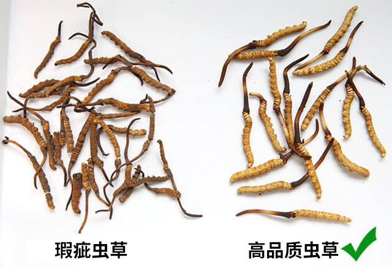
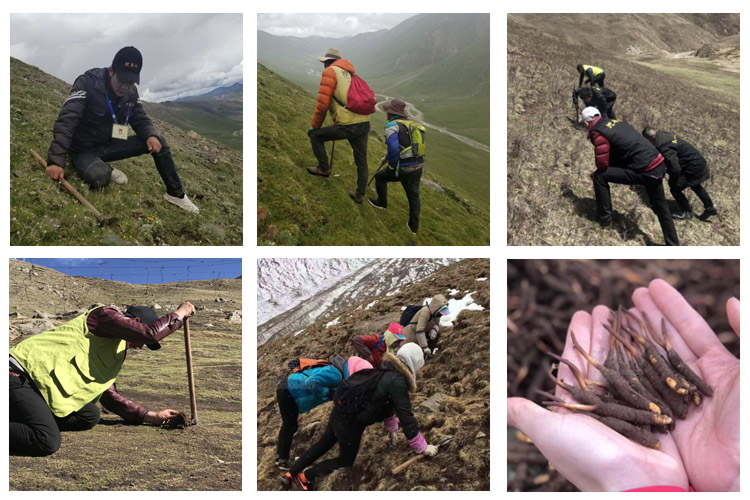
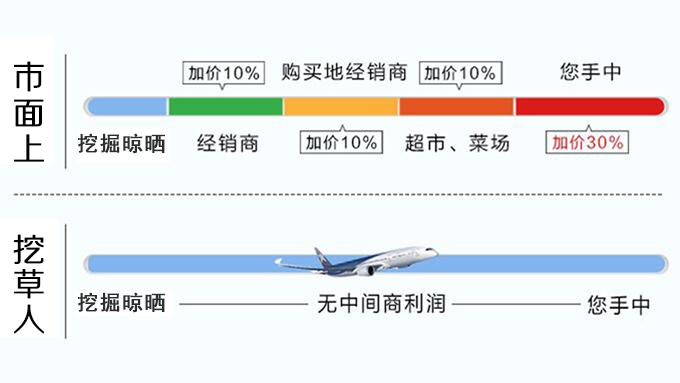
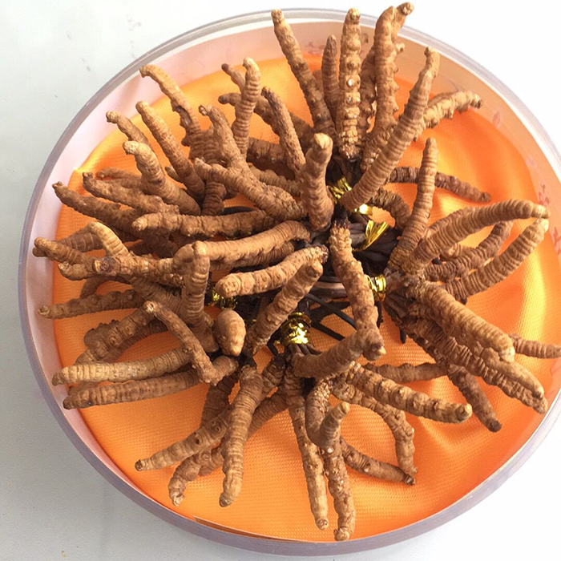
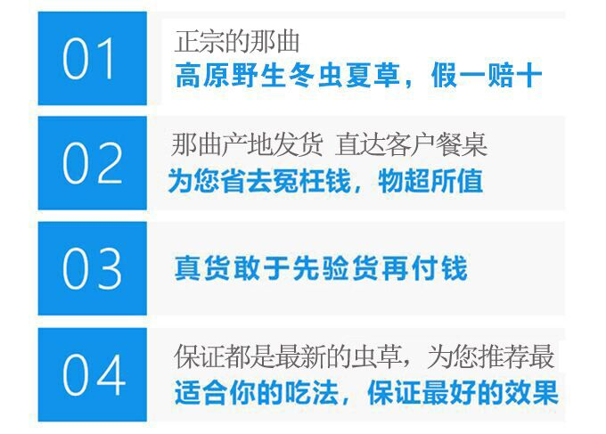

健康吧
关注 264w吃虫草的好处有哪些，适合什么人吃，如何挑好虫草？【置顶】
陈嘉欣 小吧主
1楼 05-09 09:31
听朋友说，每天吃虫草对人的身体有很多好处，想买一些给家人吃。但我是个虫草小白，想问一下大家，吃虫草有哪些好处，适合什么人吃，怎么挑虫草？
 9687人赞过
9687人赞过王婷
2楼 05-09 09:38
楼主你好，我家里常年吃着虫草，所以对虫草还算了解，吃虫草确实有很多好处，我的家人基本上每天都吃，老爸也喜欢拿来泡酒，老公都说很好
我吃的冬虫夏草是从那曲本地的一个采挖虫草的老乡手里直接买的，都是野生冬虫夏草
微信是

我是从前年开始吃虫草的，每天早晚时煮2-3根，有时候也直接吃。坚持吃了将近两年，用四个字来形容，“物超所值”。
吃虫草可以叫做一种投资，家里人的身体好，工作才能顺利，家和万事兴，钱花的比较值。

（左侧常见的劣质虫草，右侧高海拔野生虫草）
但是你要注意，一定要吃野生的虫草，千万不要买到造假的虫草和牙签草，人造虫草性价比太低，不建议购买。我一直吃的就是合作社的，都是当地牧民高原上每年采挖的虫草，直接从那曲那边发货，价格大概是专卖店一半，他家微信号微信是
给大家看看他家挖草的过程

想要买加他微信就好了，他家的虫草我找人鉴定过，确实是野生的。他的朋友圈里面也有很多有趣的吃法，还有今年采挖新草的视频，你可以加上微信看看。
4815人赞过陈嘉欣 小吧主
5楼 05-09 11:45
章鱼
6楼 05-09 11:55
虫草的好处楼上都已经说了，我比较赞同的是：吃虫草是一种投资。
我来说一说如何挑虫草，还有虫草价格方面的问题。
市面上的虫草有很多种，品质最好的是西藏那曲的野生虫草，也有其它地区低海拔虫草，
野生虫草是在海拔3500米以上自然生长的，海拔越高代表品质越好，营养成分自然越多，市面上的虫草分两种，建议吃我说的野生虫草，性价比高一些。
那曲草原海拔4700-6000米，属于特殊的高原性和大陆复合性气候碱性土壤中矿物质、微量元素含量丰富，昼夜温差大，日照充足 加上适宜的空气湿度，使得这里出产的冬虫夏草以色正、体满、营养价值高闻名于世。
虫草价格：
在专卖店中，同等大小的高品质虫草价格是劣质虫草的三倍以上，之所以专卖店中那些低海拔虫草的
价格如此之高，是因为虫草从牧民到专柜之间经过了多个中间商，层层加价，所以价格虚高。

就拿合作社的虫草来说，牧民上山挖虫草，直接卖给顾客。只有人工费用，没有任何中间商加价，所以价格要低一些，同等品质的虫草价格也就是专卖店的一半。而且还保真。所以我一直吃着合作社的虫草。微信是
给大家看看我买的合作社的虫草
（色泽，干度上佳）
专卖店中的虫草，野生的少之又少。虫草市场水太深的，价格虚高，真假难辨，并不一定价格高就能买到好的。合作社的虫草一直都是野生的，很让人放心。
我一直是吃合作社的虫草，高品质野生虫草，吃了好多年，除了他家的别家还真信不过。合作社的微信号是
给大家看看合作社在朋友圈中发的承诺
 2843人赞过果宝麻麻
7楼 05-09 13:25
陈嘉欣 小吧主
确实是野生虫草，你可以加 合作社的微信号：
燕归巢
8楼 05-09 13:41
陈嘉欣 小吧主
没错，就是：
文文
11楼 05-09 14:56
Moon
12楼 05-09 15:02
月上轩
12楼 05-09 15:02
兔子
12楼 05-09 15:02
水里的鱼
12楼 05-09 15:02
版权：西安市新城区青梅小食品批发部
获取虫草一手信息,了解虫草功效与作用，微信扫描二维码，添加咨询
已有984102人成功咨询
微信扫一扫
添加微信号